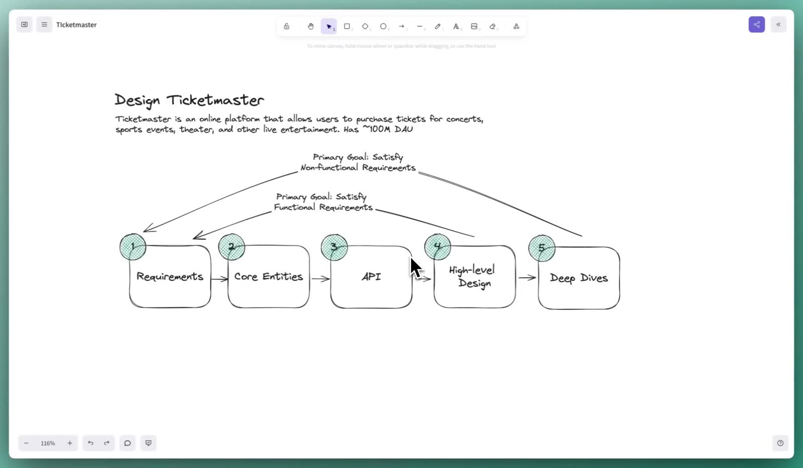
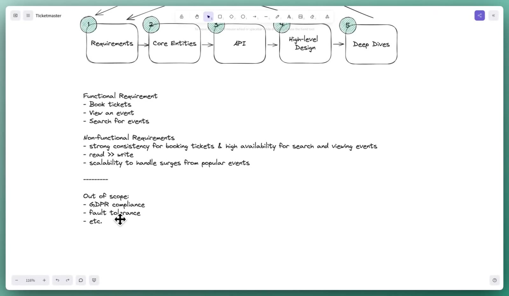
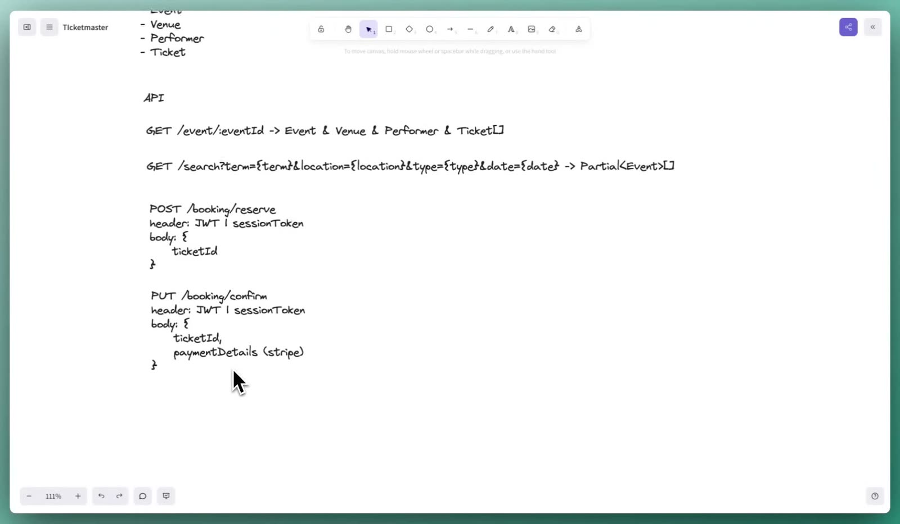
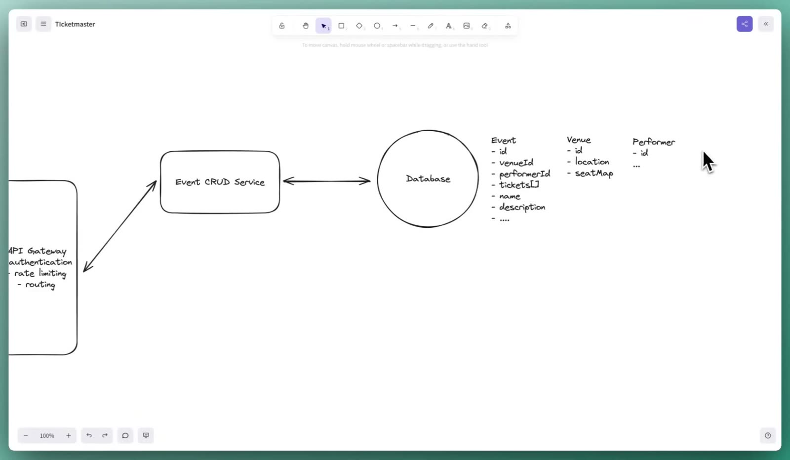
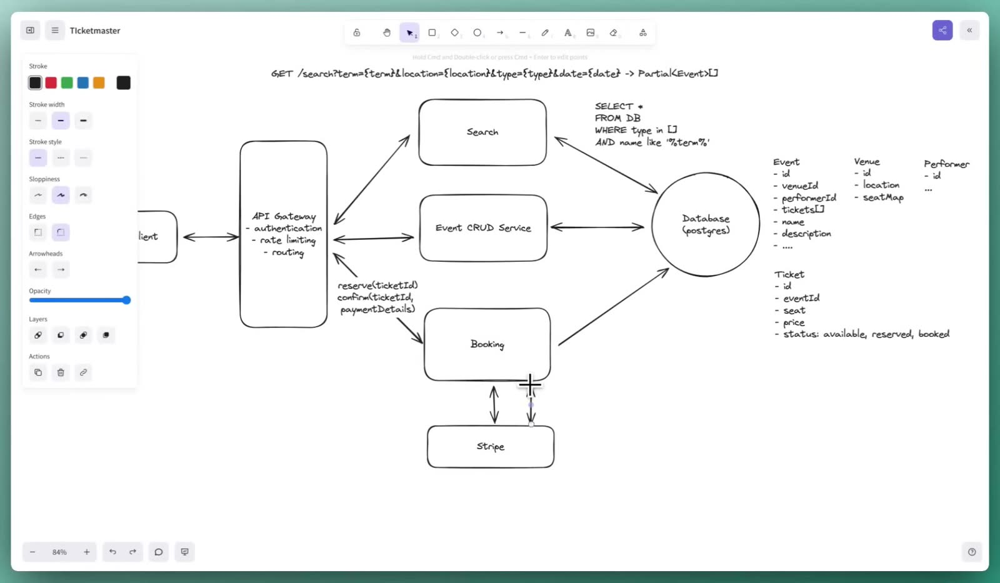
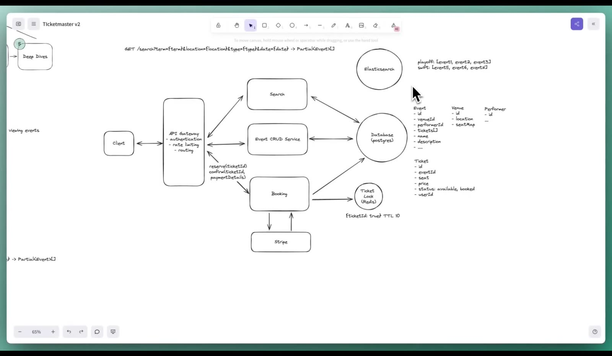
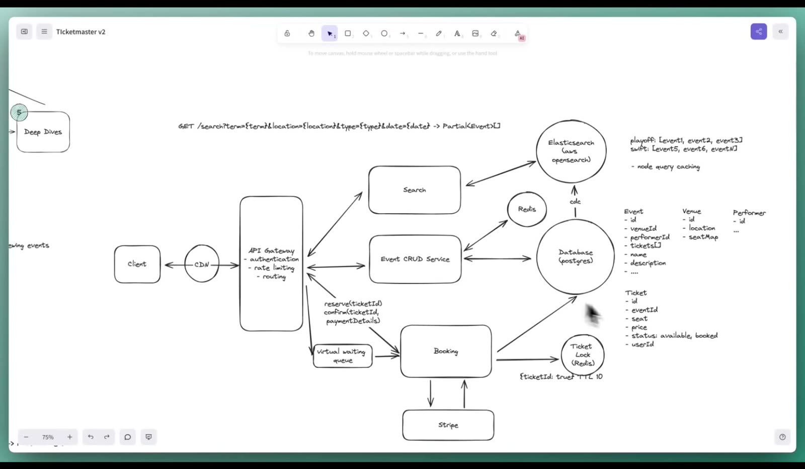

A former Meta Staff Engineer — who says he has asked this exact question more than 50 times — designs a Ticketmaster-style ticket booking service from an empty whiteboard. Every step of a real interview loop: requirements, entities, APIs, a working high-level design, and the deep dives (TTL-based seat holds, search, real-time seat maps, virtual waiting queues) that separate senior from staff.
By Evan — ex-Meta Staff EngineerHello Interview59 min original recording
Evan, a former Meta Staff Engineer and co-founder of Hello Interview, walks through "Design Ticketmaster" exactly as he runs it in real interviews. The system is a ticket booking service (~100M DAU on his whiteboard) where the hard parts are never double-booking a seat, expiring holds on time, and surviving a Taylor Swift on-sale. Ten bullets carry the whole talk; the chapters below carry the reasoning.
Follow a fixed roadmap. Requirements → Core Entities → API → High-Level Design → Deep Dives. Requirements + entities + APIs satisfy the functional requirements; the high-level design follows the same goal; deep dives exist to satisfy the non-functional ones. Budget: ~15 minutes through the APIs, ~20 left for design and deep dives. (Ch 2)
Functional requirements are three. Search for events, view an event (details + seat map), book a ticket. Derive them by walking the user journey backwards. (Ch 3)
The senior CAP answer is split, not singular. Strong consistency for booking (never two owners of one seat), high availability for search and viewing (a few seconds of staleness is fine). Mid-level candidates say "consistency over availability" and stop; seniors apply CAP per part of the system. (Ch 3)
Reads dwarf writes ~100:1, and traffic is steady until a mega-event sends "tens or hundreds of millions" to the same seats at once — so scalability means surge handling, not average throughput. (Ch 3)
Booking is two-phase.reserve(ticketId) starts a 10-minute countdown; confirm(ticketId, paymentDetails) completes it. Identity lives in a JWT/session header, never a user ID in the body — that would be spoofable. (Ch 4)
The high-level design is deliberately plain. Client → API gateway (auth, rate limiting, routing) → three microservices (search, event CRUD, booking) → Postgres; Stripe for payment via webhooks. Name the database qualities you need instead of litigating SQL vs NoSQL. (Ch 5)
Expiring holds, in order of sophistication: a reservedAt timestamp → a cron job (works, but holds can last up to ~2× the TTL) → a Redis ticket lock with a 10-minute TTL — the optimal answer. Reserve writes nothing to the database; the seat map is "available rows minus locked IDs". If the lock store dies, Postgres ACID still prevents double-booking: first purchase wins, the loser gets an error. (Ch 6)
Search gets an inverted index. Tokenize names/descriptions into terms mapping to events (playoff → [e1, e2, e3]). Keep Elasticsearch as a derived view of Postgres, synced by dual writes or change data capture (CDC). Cache hot queries with the OpenSearch/Elasticsearch node query cache, Redis, or a CDN — but know the caveats: query permutations, lat/long precision, personalization. (Ch 7)
Keep the seat map live. Long polling if users linger 1–5 minutes; server-sent events (unidirectional, which is all you need) or WebSockets if they linger longer. (Ch 8)
Protect the backend with a choke point. For mega on-sales, a virtual waiting queue — cheaply a Redis sorted set ordered by arrival time — admits users in batches as seats free up and notifies them over the same SSE connection. "The best answer isn't the most technically complex." (Ch 9)
Skip ahead to the chapters below, or jump to the glossary or the cheat sheet.
The task: design a ticket booking service like Ticketmaster — concerts, sports, theater.
Asked constantly at Meta (especially the "product design"/Product Architecture interview) and across FAANG+ system design loops.
The speaker spent 5 years at Meta as a staff engineer and interviewer, and has asked this question 50+ times across Meta and Hello Interview mocks — the video is his composite "best answer" plus the mistakes he watches candidates make.
Evan frames the video as the first in a series: a real interview run-through, paused periodically for the tips, frameworks, and failure patterns he has collected as an interviewer. That interviewer's-eye view is the video's real product — you get not just a design but a calibration of which answer passes at which level, repeated at every step.
Five stations, run in order: Requirements → Core Entities → API → High-Level Design → Deep Dives.
The first four share one primary goal: satisfy the functional requirements. Deep dives exist to satisfy the non-functional ones.
He wrote "~100M DAU" on the board — scale context before any design decision.

02:30 — The roadmap. The arc labels are the whole strategy: everything through the high-level design serves the functional requirements; deep dives serve the non-functional ones. When you're lost in an interview, re-read which goal the current section serves.
Why a fixed roadmap? Because it converts a 40-minute blank page into five timed sub-tasks, and because each station feeds the next: entities become API payloads, APIs become the arrows in the high-level design, and the non-functional requirements become the deep-dive agenda. He also gives a time budget mid-video: reaching the end of the APIs at ~15 minutes is on pace, leaving roughly 20 minutes for the high-level design and deep dives.
Nothing before the deep dives should be clever. If you find yourself optimizing search or availability during the entity step, you're spending time budgeted for the deep dives — park it ("this won't cut it, I'll come back") exactly as he does with LIKE search in Chapter 5.
Functional: book tickets · view an event (details + seat map) · search for events. Derived backwards from the user journey: search → event page → book.
Non-functional — the three that matter here: strong consistency for booking + high availability for search/viewing (CAP applied per subsystem); reads ≫ writes (~100:1); scalability to handle surges from popular events.
Everything else goes "below the line" (GDPR, fault tolerance, …), and you ask the interviewer to reorder your priorities.

> write, scalability to handle surges from popular events), and Out of scope (GDPR compliance, fault tolerance, etc.)" loading="lazy" />
09:00 — The finished requirements board. Three functional rows, three non-functional rows that are specific to this system, and an explicit out-of-scope list. This is the contract every later design decision checks against.
Functional requirements: walk the journey backwards
He starts from the most essential action — booking a ticket — then asks what it presupposes: booking means viewing an event page with a seating map; viewing presupposes finding the event at all. Hence, in priority order: book tickets, view an event (details: who, where, when — plus the seat map), search for events. If a candidate stalls, these are the three he pushes them toward.
Non-functional requirements: don't recite the "ities"
His biggest pet peeve: candidates who write availability, scalability, reliability and move on. Every system has those; listing them proves nothing. "The important part of non-functional requirements is to identify what makes this system unique, interesting, and challenging." For Ticketmaster he works through three:
CAP, asked concretely. The easy, mid-level answer: prioritize consistency over availability, because no seat may ever belong to two users ("no double booking"). The senior answer refines it: those goals coexist in different parts of the system — strong consistency for booking (if a user in Germany buys the seat I'm looking at from America, I must find out instantly or get an error) while search and viewing stay highly available (an event added seconds ago not appearing yet is acceptable).
Read/write ratio ≈ 100:1. Far more people browse than buy — he estimates from a single-digit-percent conversion rate. This asymmetry drives later decisions (cache reads aggressively; tickets themselves are the only hot dynamic data).
Access pattern: calm, then tsunami. Booking traffic is even and stable until a Taylor Swift tour, a Super Bowl, or a World Cup goes on sale and "tens or hundreds of millions of people" hit the same seats simultaneously. So scalability here means surge capacity — not writing the word, but designing for the spike (see Chapters 8–9).
Below the line: scope negotiation as a feature
Long lists of secondary qualities (GDPR compliance, fault tolerance, analytics) go under a line marked out of scope — then become a conversation: "Here's what I'm prioritizing; want me to move anything up or down?" He flags this as a subtle signal that you see the whole product surface but can still stay focused.
Common mistake
Reciting generic qualities ("it must be available and scalable") without tying each to this system's specific failure mode. The correction is always the same: name the concrete scenario — double-booking, stale seat maps, Taylor Swift — and let the requirement fall out of it.
Entities (2 min):Event, Venue, Performer, Ticket. Admin-added events are out of scope. Don't enumerate fields yet — "they will develop naturally."
APIs (≤5 min): one or more endpoints per functional requirement, exchanging those entities. REST by default; GraphQL is the main alternative.
Booking is two-phase:POST /booking/reserve holds a ticket for 10 minutes; PUT /booking/confirm pays for it. Identity rides in a JWT/session header — never a user ID in the body.
Entities: what gets persisted
He lists four: Event (added by admins — and he explicitly marks event creation out of scope to keep the interview on the user journey), Venue (events happen in stadiums), Performer, and most importantly Ticket — the table that answers availability, ownership, and price for every seat of an event. On field detail: "I'm not going to detail the fields yet because I don't know them for sure… during the high-level design we'll define the important fields."
The APIs
The method: look back at each functional requirement and write the endpoint(s) that satisfy it, taking and returning those entities. He writes TypeScript-inspired pseudocode — Partial<Event>[] just means "enough fields (title, description, performer…) to render search results; the full object comes from the event endpoint."
HTTP · as drawn on the whiteboard (16:00–17:30)
# View an event — everything the event page needs
GET /event/:eventId -> Event & Venue & Performer & Ticket[]
# Search — all parameters optional
GET /search?term={term}&location={location}&type={type}&date={date}
-> Partial<Event>[]
# Booking, phase 1: hold a seat for 10 minutes
POST /booking/reserve
header: JWT | sessionToken
body: { ticketId }
# Booking, phase 2: pay (POST would also do; it doesn't create a record)
PUT /booking/confirm
header: JWT | sessionToken
body: { ticketId, paymentDetails (stripe) }

17:30 — Entities and the four endpoints. Notice what's absent from the request bodies: any user ID. He calls that out deliberately — see the security note below.
Why booking is two endpoints
If you've bought an airline ticket you know the pattern: pick a seat on the map, then get a payment page with a 10-minute countdown during which the seat is yours — and returns to the pool if you don't pay. He considers recognizing this unprompted "awesome to see… but it's not a requirement": when a candidate writes a single booking endpoint, he simply points out the two-phase reality and lets them amend it.
Several candidates put userId in the reserve body. That's a spoofing hole — anyone could reserve for anyone by editing the ID. Identity belongs in an authenticated Authorization header (JWT or session token) that the server verifies; the mention itself demonstrates technical depth, and then you move on.
The confirm endpoint and Stripe
Confirm carries the ticket ID plus payment details. The booking service hands payment to Stripe — he name-drops its Payment Intents API with client libraries for React/JS — and Stripe answers asynchronously via a webhook callback URL you register on your booking service. He adds that the exact verb is negotiable: confirm "may not be POST since we are not creating a new record… maybe PUT or PATCH. That's definitely not the most important thing."
The video's sketch matches Stripe's documented design: a PaymentIntent tracks one payment through states like requires_confirmation → processing → succeeded; because processing is asynchronous (card networks, banks), Stripe's own guidance is to fulfill orders from the payment_intent.succeeded webhook, not from the client, which may close the page before completion. Failed payments surface as payment_intent.payment_failed. (Supplemental source: Stripe documentation, linked above.)
Goal: a simple architecture that satisfies the three functional requirements — one request path at a time.
Client → API gateway (authentication, rate limiting, routing) → microservices: Search, Event CRUD, Booking → a Postgres database holding the four entity tables; Booking also talks to Stripe.
Database choice: name the qualities you need (ACID for tickets, transactions, simple relations) and pick the tool you know — the SQL-vs-NoSQL debate itself is "a bit of an outdated topic."
The first search implementation is a slow LIKE query, deliberately left unfixed until functional requirements are met.
The skeleton
He opts for microservices "by far the most common setup in these types of interviews… if you're not sure, it's probably the right call." The API gateway fronts everything and does three jobs worth naming: authentication, rate limiting, and routing to the right service. Then he walks each API from Chapter 4 through the diagram, one at a time — the discipline being that every arrow on the board traces back to a functional requirement.
The database and its schema

21:00 — Event viewing path and schema. The Event row carries foreign keys (venueId, performerId) and a one-to-many to tickets; Venue holds location and seat map. Fields appear here — not in the entity step — because now we know which ones the APIs need.
On the perennial SQL-vs-NoSQL question he chooses Postgres with a rationale: consistency matters for tickets, ACID transactions protect them, and the data has genuine one-to-many relationships. Then the senior-level move:
"In an interview, the NoSQL vs. SQL discussion is a bit of an outdated topic… what's much more interesting is what database qualities you need — most of what a SQL database can do, a NoSQL database can now do too. Many mid-level candidates compare SQL and NoSQL; more experienced candidates say: here are the qualities I need — any of these would work."
— Evan, ~22:10 (condensed from the captions)
Search: good enough for now, and labeled as such
SQL · the naive search, as sketched (~24:00)
SELECT * FROM events
WHERE type IN (…)
AND name LIKE'%term%'; -- full table scan: "horribly, incredibly slow"
Leading wildcards defeat every index, so this scans the whole table per query. That's fine at this stage — the high-level design's job is the functional requirements — as long as you say it out loud: "this isn't going to cut it; I'll come back and optimize once I've satisfied all my functional requirements first." That promise becomes Deep Dive #1.
Booking: reserve, pay, confirm
The booking service handles both phases. On reserve(ticketId) it updates the ticket row's new status column to reserved and the client gets a 200 with a 10-minute countdown. On confirm(ticketId, paymentDetails) the service calls Stripe, which processes the payment asynchronously — contacting card networks and banks — and reports back not through the original response but through a webhook to an endpoint the booking service exposes for that purpose. On success the service updates the row to booked plus the buying userId (confirmation emails are declared out of scope).

27:00 — Version 1, complete. Every functional requirement has a path. The ticket's status enum — available, reserved, booked — is the pivot the next chapter attacks: reserved rows are about to become a bug.
6.The 10-minute hold: three fixes, in order of sophistication
Bug: a user who closes their laptop leaves the seat reservedforever — violating the 10-minute expiry.
Fix 1 — timestamp column: store when it was reserved; treat old reserved rows as available. Works, but the data model now lies (reserved rows that aren't really held).
Fix 2 — cron job: every 10 minutes flip expired rows back. Passable for mid-level, but the hold can effectively last ~2× the TTL (up to 19 minutes in his example). Not enough for senior+.
Fix 3 — distributed lock (the optimal answer): reserve writes nothing to the database; it sets ticketId = true in Redis with a 10-minute TTL. Seat map = DB-available rows minus Redis-locked IDs. Expiry is exact, to the second.
If the lock store dies: stands up a new instance, but users holding locks in that window lose them — two buyers may race to pay. Postgres ACID still means one winner; the loser gets an error. Bad UX for ≤10 minutes; a deliberate product tradeoff.
The bug
He asks "attentive viewers" to spot the flaw he left on the board: the payment page's countdown is enforced by nothing. If the user abandons checkout, the row stays reserved, seat-map queries exclude it, and the best seat in the house is unbookable for eternity — "which is wrong, and doesn't meet our requirement of expiring after 10 minutes."
Fix 1 — a timestamp and a smarter query
SQL · availability query with hold expiry (~29:40)
SELECT * FROM tickets
WHERE event_id = :eventId
AND ( status = 'available'OR ( status = 'reserved'AND reserved_at < now() - interval '10 minutes' ) );
Verdict: "this would absolutely work… the one downside is you make your database and your data model a bit confusing — you have a status of reserved while things aren't actually reserved, and you need to keep these two things consistent." Two sources of truth for one fact is exactly the kind of debt an interviewer probes.
Fix 2 — a cron job
A job runs every 10 minutes, finds reserved rows whose timestamp is older than 10 minutes, and flips them to available. "Totally a valid approach, and for mid-level candidates kind of a passing approach for the interview. For senior, staff, principal and beyond — this wouldn't quite cut it." The reason is latency: call the delay between should-have-expired and job-rann. A seat supposed to free at 12:00 that the 12:09 job releases was held 19 minutes — nearly double the promised TTL — and might be sold from under someone else's countdown in the meantime.
Fix 3 — a Redis ticket lock (the answer to remember)
Drop both the cron job and the timestamp. On reserve, touch only Redis: key ticketId, value true ("that part doesn't matter"), TTL = 10 minutes — after which Redis deletes the key automatically. The booking service's write path disappears; expiry becomes exact rather than periodic.
Redis commands · what the service effectively runs (adapted from the talk)
# reserve(ticketId): succeed only if not already held; auto-expire in 10 minSET ticket:{ticketId} trueNXEX600# confirm(ticketId) succeeds -> write booked + userId to Postgres, DEL the lockDEL ticket:{ticketId}
# seat map: SELECT available FROM postgres, then drop IDs still present in RedisEXISTS ticket:{ticketId}
Rendering the seat map becomes a two-step read: query Postgres for available tickets, then check Redis for each ID and remove the ones still locked. A laptop-closer's seat reappears at 10 minutes and one second, because the key is simply gone. And why Redis rather than an in-memory map inside the booking service? Because the service "isn't a single machine… it will horizontally scale, and all instances need the same consistent, singular view of the lock." He calls this "the optimal answer."
What if the lock store goes down?
Detection + a new instance is fast, but every user who reserved in the dying instance's last 10 minutes loses their hold — so within that window two users can reach the payment page for the same seat. The safety net is the database: Postgres's ACID guarantees serialize the two booked writes, "the first person to send a purchase request wins, and the other gets an error." Integrity survives; the user experience doesn't. He'd take that trade — but frames it as a product conversation, not an engineering fiat: "is it acceptable that in this disaster scenario we keep integrity but users suffer for ten minutes?"
The sketch above is Redis's documented simple locking primitive: SET resource-name anystring NX EX max-lock-time acquires the lock iff the key is absent, and "the lock will be auto-released after the expire time is reached" — exactly the ticket-hold semantics. Redis also publishes a Redlock algorithm with stronger multi-node guarantees, and notes the single-instance pattern's caveats (e.g. releasing a lock you no longer own — the fix is value-checked deletes). The interview answer needs only the TTL idea. (Supplemental source: redis.io.)
Deep-dive method: re-read your non-functional requirements, find the unmet one, lead there. He adds low-latency search to the NFR list mid-interview — editing requirements as you learn is expected, not a mark against you.
Replace LIKE with Elasticsearch: an inverted index maps each tokenized term to the events containing it (playoff → [e1, e2, e3]), with geospatial support layered on.
Elasticsearch stays a derived view of Postgres — never the primary store (durability, no complex transactions; he "learned the hard way" at his first startup). Sync via dual writes or change data capture; this system's write volume is tiny, so no queue needed.
Popular queries are cacheable because there's no personalization — three levers: the engine's node query cache, Redis/Memcached, or a CDN in front of the search API (30–60 s), each with stated caveats.
The fix: an inverted index
A search-optimized database like Elasticsearch (his default recommendation for interviews) builds an inverted index: break each event's name and description into tokens, and map every term to the documents — here, events — that contain it. His example sentence, "The Philadelphia Eagles are playing in a wild-card matchup against the Broncos…", becomes terms like Philadelphia, Eagles, wild card; then playoff → events 1, 2, 3 and swift → events 5, 6, n sit in "a hash map of sorts," so a term query is one lookup instead of a table scan. Combined indexes let one query mix text terms, location, and date.

39:00 — The inverted index on the board. Two terms and their posting lists are all he draws — that's the depth needed. The "node query caching" note pre-figures the cache lever at the end of this chapter.
He hedges on air: Elasticsearch "supports geospatial queries… using a combination of quadtrees and geohashing — don't take my word as ultimate truth." Verified: that was exactly how classic Elasticsearch indexed shapes — GeohashPrefixTree and QuadPrefixTree rasterized shapes into grid terms for the inverted index. Since Elasticsearch 6.6 those prefix trees are deprecated and removed; geo_shape now indexes shapes as a triangular mesh in a BKD tree, and geo_point moved to BKD back in 6.0. So: correct for the classic architecture the talk assumes; modern clusters do it differently. (Supplemental sources: Elastic docs and blog, linked.)
Keeping Elasticsearch honest: syncing from Postgres
First, a rule: Elasticsearch as primary data store is not best practice — durability concerns and no real transactional support. He used it that way at his first startup "and learned the hard way." So Postgres stays the source of truth and changes must propagate. Two ways:
Dual writes in application code. Every event write goes to Postgres and Elasticsearch. Simple, but the app now owns failure handling: if the second write fails, retry it or back out the first — "a few things to consider depending on your product requirements, but definitely a viable solution."
Change data capture (CDC). Changes to the primary store are captured onto a stream; a worker consumes the stream and applies each change to Elasticsearch. In interviews this is drawn as one arrow, and he's explicit that the arrow hides "a pretty serious abstraction — a stream, and some worker that does the write," which you should acknowledge. One trap to name: Elasticsearch has a per-second write limit because every write updates indexes, so high-churn systems need a queue or batching in front of it. This system doesn't: events, venues, performers barely change and are added at most in the hundreds or thousands per day — "absolutely nothing" — so direct per-change updates are fine.
For a concrete instance of the "capture the write-ahead log, publish the change" pattern he abstracts, see Debezium — an open-source change-data-capture platform that tails databases like Postgres and emits each row change onto Kafka-style streams. (Supplemental source: debezium.io.)
Making hot queries faster: three cache levers
The setup observation matters more than the levers: this system does no ranking or personalization, so two users issuing the same search get byte-identical results — which is precisely what makes the query cacheable. Flag that when you cache, he says, because it's also the boundary of the technique.
The engine's own query cache. You're likely running OpenSearch (AWS's managed Elasticsearch fork), which "supports something called node query caching — I think that's what it's called, don't quote me, look that up." His description: a cache on each instance/shard holding the ~10,000 most popular queries, LRU-evicted, enabled via config — "quick, dirty, easy, works great."
Redis or Memcached in front. Cache the search term (or its normalized form) → results. Works fine; the price is invalidation discipline when events change.
The CDN you already have. Most systems front static assets with a CDN; let it also cache the search API response for 30–60 seconds. A million people searching the same thing then get answers from an edge node "geographically close to them… wicked fast." His preferred lever for exactly this reason.
The feature is called the node query cache — but with two corrections to the on-air description. It is one cache per node, shared by all shards on that node (not one per shard), and it caches results of queries in filter context on a per-Lucene-segment basis. The rest checks out: LRU eviction, default budget 10% of heap, up to 10,000 queries tracked via a query-history heuristic, enabled by default and tunable via indices.queries.cache.size. OpenSearch documents the same cache and tuning knob in its caching guide, alongside a separate shard request cache (default 1% of heap) that caches whole request results per shard and invalidates on refresh. (Supplemental sources: Elastic and OpenSearch documentation.)
When each search cache fails
CDN: value decays as query permutations multiply. Raw lat/long as a parameter kills it — no two users share coordinates, so "two users would never hit the same" cache key and you're "just wasting space on the CDN." Coarse values ("San Francisco" + date) keep hit rates healthy.
All of them: the day the product adds personalized recommendations, identical-query caching is wrong by definition — the same API call must return different results per user. Worth saying aloud in the interview as the boundary of the optimization.
Problem: the seat map is a snapshot. Seconds after it loads, seats it shows as available can be gone — the user clicks one and gets an error. "A really bad experience," and frequent exactly for the popular events you care about.
Option 1 — long polling: hold an HTTP request open ~30–60 s; server answers when a ticket status changes; client immediately re-requests. Cheap, no new infrastructure, ideal when users spend 1–5 minutes on the page.
Option 2 — persistent connection: WebSockets (bidirectional) or Server-Sent Events (unidirectional server→client). Since the server only needs to push "that seat is taken," SSE is sufficient; the implementation is more complex and he leaves it out of interview scope.
He first traces today's path to make the staleness concrete: the client asks the event CRUD service for event/venue/performer, then tickets with status, then crosses those against the Redis lock so held seats render as unavailable. Accurate for one instant — then a "1 second, 2 seconds, 5 minutes…" clock starts, and every tap risks an error. The fix is push: update the client whenever a ticket moves between available, reserved, or booked.
Push options, as compared in the talk
# Long polling — one held HTTP request at a timewhile (user On SeatMapPage):
changes = await server.holdOpenForTicketChanges(30..60s) # respond on change or timeout
client.apply(changes) # then immediately re-request# SSE — one persistent server->client stream (his pick)
client: newEventSource("/events/{eventId}/seat-updates") # server pushes whenever a status changes# WebSockets — same persistence, both directions (more than this problem needs)
The selection logic is the interview-worthy part: long polling is "super cheap, easy to implement, requires no additional infrastructure" and is perfect for minute-scale sessions; only analytics showing hour-long sessions justify operating persistent connections. And between the two persistent options, SSE's one-way street is a feature here — the client never needs to talk back, so take the simpler primitive. He'd wire SSE between client, API gateway, and the event CRUD service, pushing every status change.
Server-Sent Events are plain HTTP: the server responds Content-Type: text/event-stream and writes small newline-delimited text events; the browser's EventSource API parses them and reconnects automatically if the stream drops. One operational footnote from the same page: without HTTP/2, browsers cap SSE connections per site (historically six per browser+domain) — with HTTP/2 the streams multiplex over one connection. (Supplemental source: MDN.)
9.Deep dive: surges & the virtual waiting queue
52:00 – 53:50~1 min 50 s (the densest stretch of the talk)▶ Watch from 51:00
In one paragraph
Real-time updates amplify the mega-event problem: 100,000–1,000,000 people watch "10,000 to 100,000 seats" evaporate in milliseconds — the page "goes black."
Fix: introduce a choke point in front of the backend — a virtual waiting queue, enabled per-event by admin config for the few events that need it.
Implementation: a Redis sorted set (priority by arrival time; some systems randomize for fairness so the geographically closest users don't always win), plus event-driven admission — every time N seats are taken, admit the next N, pull their IDs/tokens from the queue, and notify them over the same SSE connection from Chapter 8.
The lesson he draws: simple + creative beats technically complex.
"They get to that page and it immediately goes black — they'll see all these available seats, and within a couple of milliseconds it's just going to go black, because everything got booked… 100,000 or a million people all trying to fight for the same 10,000 to 100,000 seats. So we need to introduce a choke point… protect our backend services… and improve the user experience by doing so."
— Evan, ~52:00
The queue only exists for events that need it — an admin flips it on per event. Everyone else browses as usual. For a mega on-sale, buyers land in the queue ("Thanks for your interest — you're in line; we'll let you know when it's your turn") and the system meters entry: when 100 seats are booked, let the next 100 (or 1,000) through, remove them from the set by user ID/session/token, and push "you're in" over SSE. Admission is thus driven by actual inventory, so the people entering always have something real to buy.
Redis sorted sets keep unique members ordered by a score (O(log N) inserts) — score = arrival timestamp gives a FIFO priority queue with cheap range pops from the front; Redis's own docs highlight leaderboards/rank queries, which is also how you'd render "you are #48,113 in line." Using Math.random()-style scores (or shuffled admission) instead makes queue order fair across geographies, since arrival time favors users near your servers. (Supplemental source: redis.io.)
The lesson he pauses to draw
"A simple solution, but a sophisticated solution… often the best answer isn't the most technically complex, but instead solves the problem in a simple and perhaps creative way." If your surge answer starts with exotic infrastructure, you skipped the waiting room every ticket site you've ever used already has.
10.Remaining qualities: scale, shard, cache — with purpose
Cross off the remaining NFRs: strong consistency (done — the Redis lock), high availability for reads, read-heavy ratio.
Generic scaling talk is the least interesting to interviewers: managed gateways with load balancers, services autoscaling horizontally on CPU/memory — say it once, briefly.
Do math only when it changes the design. Early back-of-envelope QPS dumps ("wow, big system") teach nobody anything — "math without a purpose." Compute when a decision hangs on it: e.g., does the tickets table outgrow one Postgres instance?
If sharding: shard by event_id (most queries are per-event) or by venue_id (if geographic locality of searches matters) — a pros/cons discussion with the interviewer, no right answer.
Cache the immutable 95%: events/venues/performers barely change → cache them in Redis, invalidate on write, no eviction policy needed (or bound it to upcoming events). Tickets stay uncached — they're the dynamic part. Result: the view path hits Redis for context, Postgres only for tickets.
The "math without a purpose" aside
Astute viewers notice he never did QPS/storage estimations after the NFRs — on purpose. Most candidates compute daily active users and QPS, exclaim "wow, that's a lot," and move on: "I didn't learn anything about the candidate; the candidate didn't learn anything that would inform their design. They were just checking a box. I consider this math without a purpose." His rule: run the numbers at the moment a choice depends on them — here, deciding whether Postgres needs sharding — and let the result drive the discussion.
Caching the read path
Since reads outnumber writes ~100:1, and event/venue/performer rows are near-immutable, he adds a Redis cache keyed by event ID holding the event + its venue + performer. On database updates, invalidate or update the cache; no LRU/LFU policy is needed if the working set fits ("or maybe just events that are upcoming or within the last four months"). The GET /event/:eventId path becomes: Redis for the context, one Postgres query for tickets — because tickets are the dynamic data you deliberately don't cache.

57:00 — The finished design. Every box earns its place from a named requirement: CDN (hot searches), Elasticsearch + CDC (low-latency search), Redis cache (read-heavy), ticket lock (strong consistency + exact expiry), waiting queue (surges), Stripe webhooks (two-phase payment).
11.What passing looks like — and a final self-check
Mid-level: what's on the board through Chapter 6 — especially reaching the Redis lock, which most mid-level candidates don't — passes "with flying colors." Stopping at the cron job can still pass if follow-ups are handled confidently.
Senior: this design passes. Staff: "probably," depending on execution, confidence, and depth shown elsewhere — principles get evaluated at staff level.
The closing ritual: re-check every functional and non-functional requirement against the board. Two yeses = confident close.
He closes by reminding viewers deep dives are self-directed — "it's up to you to decide which direction to take the conversation" — and invites corrections and questions in the comments. The durable takeaway is the checklist habit: does this satisfy all my functional requirements, and all my non-functional ones? If you can say yes to both, you're done — "obviously don't say 'I know I passed' out loud."
Check yourself
Why is "consistency over availability" an incomplete CAP answer for Ticketmaster, and what's the complete one?
Why must userId never appear in the reserve request body, and what replaces it?
A cron job flips expired holds every 10 minutes. Give the concrete scenario where a seat is held ~19 minutes.
On reserve, the optimal design writes nothing to Postgres. How does the seat map still hide held seats — and what happens at exactly T+10:01 for an abandoned hold?
The Redis lock store dies. Why can two users still not both own seat 12A?
Name the three levers for hot search queries and one condition that disables each.
Your analytics show users sit on the seat map for ~40 minutes. Which push mechanism, and why not the other?
Why does a virtual waiting queue use arrival time as its sorted-set score — and when would you deliberately not?
(All answers are in the chapters above; the cheat sheet compresses them.)
GGlossary — every term, one paragraph each
Terms as used in the talk, with the video's framing first and standard definitions where they add precision.
API Gateway
The single front door for API requests. In this design it performs authentication, rate limiting, and routing to the right microservice. A managed one (e.g. AWS API Gateway) brings its own load balancer — which is most of the "how do you scale it" answer.
CAP theorem (applied per part)
Under a network partition a system must choose between consistency and availability. The talk's refinement: the choice is per subsystem — booking picks consistency (no double booking), search/viewing picks availability (seconds of staleness are fine).
CDC (Change Data Capture)
Capturing every change to a primary data store onto a stream, where workers consume and apply it elsewhere (here: into Elasticsearch). Drawn as one arrow in interviews — an abstraction hiding the stream and the worker. Debezium is the canonical open-source implementation.
CDN (Content Delivery Network)
Edge servers geographically close to users. Used here twice: assumed for static assets, and — for 30–60 second TTLs — as a cache for hot search API responses. Loses value as query-parameter permutations multiply.
Distributed lock
A mutual-exclusion flag stored outside the services that use it, so horizontally scaled instances share one view. The talk's version: a Redis key per held ticket with a TTL, so the hold self-destructs. In-memory maps inside one service don't qualify — other instances can't see them.
Elasticsearch / OpenSearch
A search-optimized database built around the inverted index. OpenSearch is AWS's managed fork — "you're probably using OpenSearch." Never use it as the primary store (durability, no complex transactions); treat it as a derived, rebuildable view of the system of record.
Inverted index
Tokenize documents into terms; map each term to the list of documents containing it (playoff → [event1, event2, event3]). Turns "find events matching this word" from a full table scan into a hash-map-style lookup.
Long polling
The client sends an HTTP request the server holds open (talk: ~30–60 s) until there's something to say, then the client immediately asks again — a while loop. Cheap, infrastructure-free push emulation; right when sessions last minutes, not hours.
Node query cache
Elasticsearch/OpenSearch's built-in cache of filter-context query results: one cache per node shared by its shards, LRU, default ~10% of heap and up to 10,000 queries — the feature Evan cited as "node query caching… don't quote me." (His per-shard phrasing was the one part off; see Ch 7's research note.)
PaymentIntent / webhook
Stripe's object representing one payment, processed asynchronously across card networks and banks. Because the buyer may close the tab, the result arrives at a callback URL you register — the payment_intent.succeeded webhook — and fulfillment belongs there, not in the browser.
Partial<Event>
TypeScript-flavored pseudocode from the talk: a search result carries only the fields needed to render the result list (title, description, performer…); the full entity comes from GET /event/:eventId. The concept matters — trimming payloads — not the syntax.
Rate limiting
Rejecting or throttling requests per client at the gateway, protecting backends from abuse and accidental floods. Named as one of the API gateway's three jobs; the virtual waiting queue is the purpose-built sibling for on-sale surges.
Redis TTL
Time-to-live: the server deletes a key automatically when its TTL elapses. The entire hold-expiry mechanism compresses into this one primitive — SET ticket:{id} true EX 600 — making expiry exact rather than periodic.
Seat map
The venue layout showing each seat's state: available, reserved (held), or booked. Built from ticket rows cross-checked against the Redis lock — and, after Chapter 8, kept live by push updates.
Server-Sent Events (SSE)
A persistent, unidirectional (server→client) HTTP stream. Chosen over WebSockets here because the client never needs to send — the server only announces "seat X is gone." Browser support via EventSource with auto-reconnect.
Sharding key
The column a database is partitioned by. Candidates here: event_id (most queries are per-event, keeping each event's tickets together) or venue_id (if search correlates with the user's geography). Deliberately discussed only when scale math demands it.
Strong consistency
Every read reflects every completed write — no window in which two users both believe they own seat 12A. Required for the booking path; backed in this design by the Redis lock during holds and by Postgres ACID at purchase time.
Two-phase booking
Reserve (hold a specific ticket for 10 minutes) then confirm (pay). Mirrors airline checkout. Separates seat selection from payment so inventory is locked while the buyer types card numbers — and returned automatically if they don't.
Virtual waiting queue
The surge choke point: excess traffic for a mega on-sale waits in line instead of hammering the backend. Redis sorted set by arrival time (or randomized for fairness); batches admitted as inventory frees; admitted users notified over SSE. Enabled per-event by admins.
Webhook
A URL you expose so an external system can call you when something happens. Stripe reports payment results this way because the original HTTP request ended long before the card networks answered.
WebSocket
A persistent, bidirectional connection between client and server. The more powerful sibling of SSE — and more than this problem needs, since updates flow one way only.
★Cheat sheet — one page, printed, ready
Print this and rehearse the cards in order — they follow the interview's own sequence.
The five stations
R-CE-A-H-D: Requirements → Core Entities → API → High-level design → Deep dives. First four satisfy functional requirements; deep dives satisfy non-functional ones. Pace: ~15 min through APIs, ~20 min left.
Functional requirements (this problem)
B-V-S: Book tickets · View an event (details + seat map) · Search for events. Derive by walking the journey backwards: book ⇒ view ⇒ search.
NFRs that matter here
C-R-S: Consistency (strong, for booking) + Availability (search/view) split · Reads ≫ writes ~100:1 · Surge scalability (Taylor Swift / Super Bowl / World Cup). Everything else goes below the line — then ask the interviewer to reorder.
Entities & endpoints
Event · Venue · Performer · Ticket. One endpoint per requirement: GET /event/:id, GET /search?… → Partial<Event>[], POST /booking/reserve {ticketId}, PUT /booking/confirm {ticketId, paymentDetails}. Skip field detail until the HLD.
Security one-liner
Identity in the JWT/session header, never userId in the body — body values are attacker-editable. Mention it, don't marinate in it.
Database choice phrasing
Name qualities: ACID + transactions for tickets, simple relations, consistency. "Postgres because I know it and it fits — NoSQL would also work." Don't relitigate SQL vs NoSQL; experienced candidates outgrew the debate.
Hold-expiry ladder
T → C → L: Timestamp column (model lies) → Cron every 10 min (hold up to ~2× TTL; passes mid-level) → Redis lock with TTL (exact expiry; the optimal answer). Reserve writes nothing to SQL; seat map = available rows − locked IDs.
Lock-store failure story
Instance dies → holds in the last 10 min vanish → two buyers race to pay → Postgres ACID: first write wins, loser errors. Integrity intact, UX bad for ≤10 min — a product decision, say so.
Search in three moves
I-S-C: Inverted index (Elasticsearch/OpenSearch; terms → events) · Sync from Postgres via dual writes or CDC (ES write limits; here volume is tiny) · Cache hot queries (node query cache / Redis / CDN 30–60 s). Never ES-as-primary-store.
Search-cache boundaries
Cacheable because results are impersonal. CDN dies with parameter permutations (raw lat/long = zero hits); all of it dies if personalization ships. Saying the boundary is the senior move.
Live seat-map ladder
Session minutes-long → long polling (30–60 s holds, no new infra). Longer or unbounded → SSE (one-way push; enough) or WebSockets (bidirectional; more than needed).
Surge playbook
Choke point = virtual waiting queue, admin-enabled per event. Redis sorted set by arrival (randomize for fairness) → admit batches as seats free → pop ID/token → notify via the same SSE stream. "The best answer isn't the most technically complex."
Math with a purpose
No QPS theater after NFRs. Compute when a decision hangs on it (e.g., "does tickets outgrow one Postgres?") → then, if sharding: event_id (query locality) vs venue_id (geo locality), weighed aloud.
Read-path cache
Event/venue/performer ≈ immutable → Redis keyed by event_id, invalidate on write, no eviction policy needed (or bound to upcoming events). Tickets: never cached — the dynamic 5%.
Closing ritual
Walk the board against every FR and every NFR. Two yeses = done. Level calibration: cron+lock ≈ mid-level pass; full design = senior pass; staff = execution + depth elsewhere.